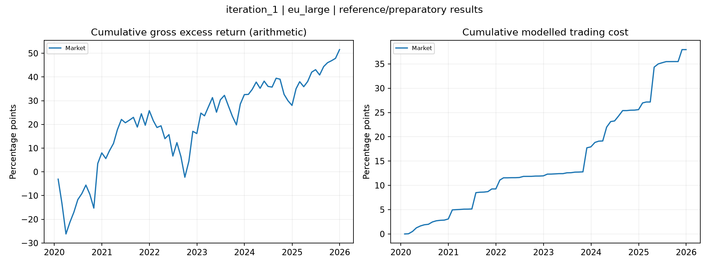

Benchmark-relative Portfolio ML, with 1%, 2% and 4% tracking-error targets.
Status: preparatory/reference outputs only; experiment unfinished
Existing Keats outputs restored and organised only. No missing experiment was run. Keats test returns are 2020-2025; no separate unseen 2021-2025 holdout is claimed. Reference/preparatory statistics are not a completed iteration result.
Returns and costs are annual decimal fractions; leverage and turnover are ratios.
| strategy | role | months | first_return | last_return | annual_gross_return | annual_cost | annual_net_return | annual_gross_volatility | net_sharpe_paper | mean_leverage | mean_monthly_turnover | annual_active_net | tracking_error_realised | information_ratio_net | benchmark_cost_convention |
|---|---|---|---|---|---|---|---|---|---|---|---|---|---|---|---|
| Market | reference_or_preparatory | 72 | 2020-01-31 | 2025-12-31 | 0.085916 | 0.063241 | 0.022675 | 0.18275 | 0.12408 | 1 | 0.015885 | 0 | 0 | NaN | net strategy minus net same-universe Market |
